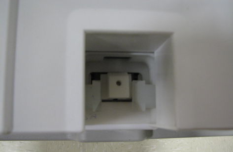

GE Exclusive Use Only
Direction 5670006, Rev# 1
Discovery MR750w GEM Service Methods
Module Version 3.0, Version Date 7/25/11
GE Exclusive Use Only |
| Required Persons | Preliminary Reqs | Procedure | Finalization |
|---|---|---|---|
| 1 | 30 mins |
The cradle is locked in the home position with a latch on the patient table bridge that engages a notch on the cradle guide rail at the rear of the table. The cradle should engage this notch just enough (without extra force) so when the cradle is pushed to the home position, it tightly engages the notch to prevent the table top from moving when the patient table is undocked.
| Item | Qty | Effectivity | Part# | Manufacturer | |
|---|---|---|---|---|---|
| Nonmagnetic Tool Kit | 1 | - | 5112581 | - | |
Undock the patient table.
Press the cradle release shown below, and confirm the cradle rail lock prevents the cradle from moving. (Up to 2 mm of movement is acceptable.)
| NOTE: | The cradle rail lock is located at the left rear of the cradle. |
If the cradle releases, pull the cradle to the front of the table and expose the cradle guide rails.
Loosen (do not remove) the five screws on each guide rail, and slide each cradle guide rail toward the front of the table.
After adjustment, confirm the cradle rail lock prevents the cradle from moving when the cradle release is pressed.
Illustration 1: Cradle Release

Push the cradle to the rear of the table, and confirm the cradle does not go past the end of the table.
If the cradle does go past the end of the table, loosen (do not remove) the five screws on each guide rail, and lower the guide rail to approximately 1 mm above the cradle ledge. (This should prevent the cradle from traveling past the end of the table.)
If the cradle still goes past the end of the table, refer to Patient Handling Troubleshooting.
Verify proper table operation:
Dock the patient table.
Ensure the Low Profile Carriage Assembly (LPCA) automatically drives out to engage the cradle.
Undock the table to verify cradle release.